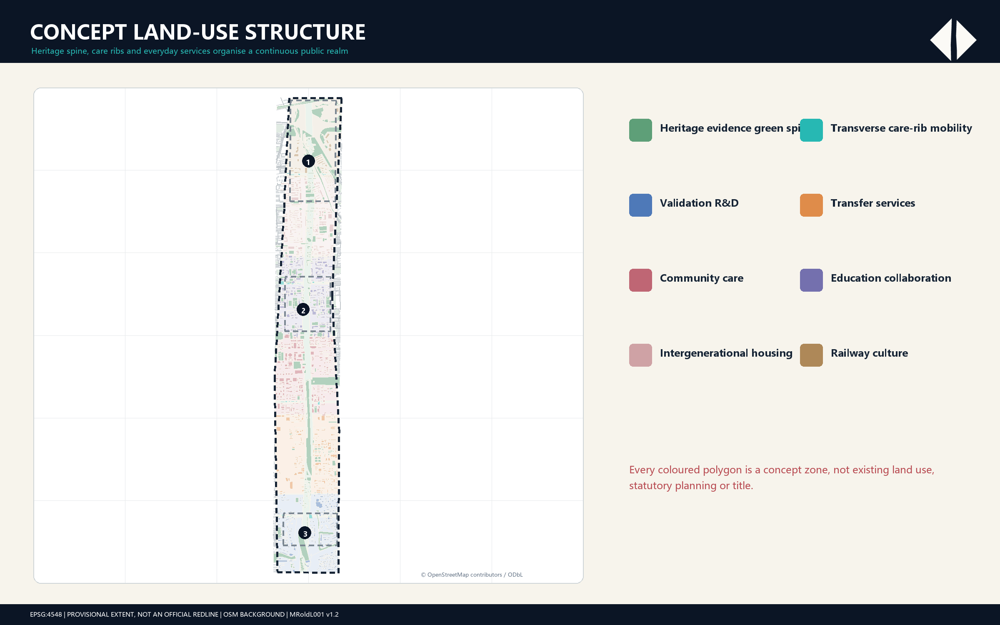
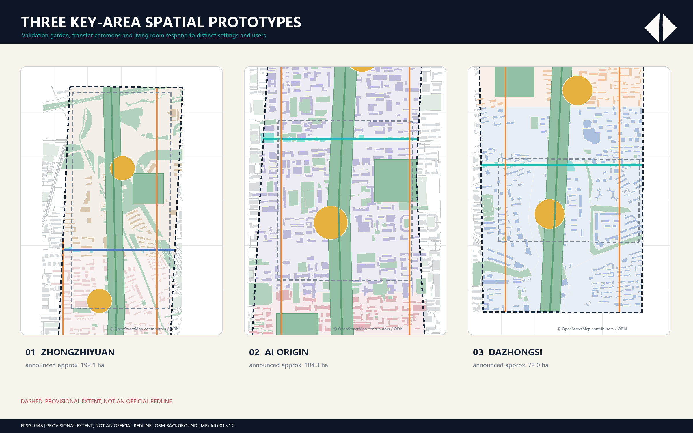
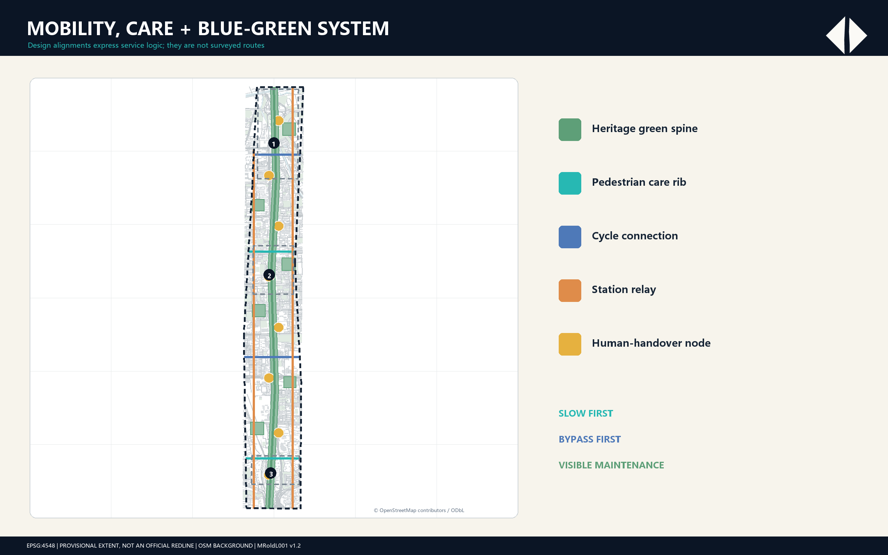
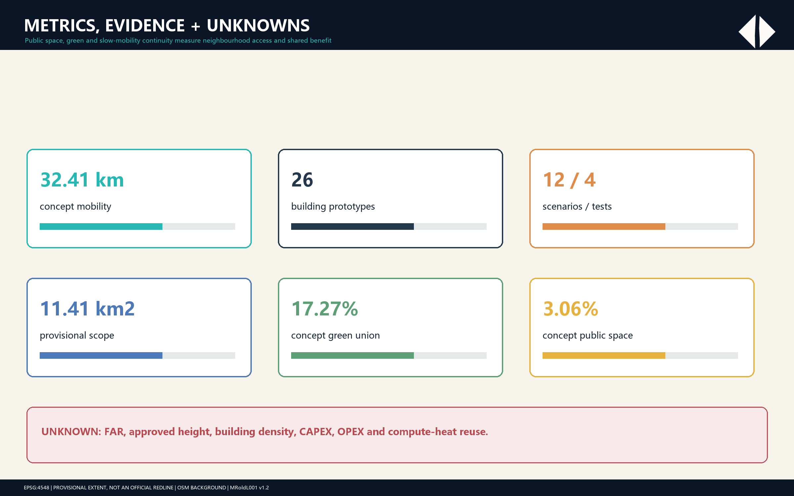

Core metrics
Every number matches a known value in metrics.json. Ratios describe design unions under provisional geometry, not approved planning controls.
SPATIAL FRAMEWORK
Three scales & land-use structure
From coordinated innovation and public-benefit research, through an overall continuous walking framework, to testable prototypes in three key areas. Building envelopes, functions and intensity remain conceptual.

One evidence line
Retains railway-heritage evidence and a walkable public interface; it does not treat open tracks as an everyday setting.
Four care ribs
Wheelchair, walking, cycling, weather cover and staffed help stitch campuses to neighbourhoods.
Three differentiated Yards
Zhongzhiyuan tests, AI Origin transfers, and Dazhongsi serves everyday life—never three copies of one centre.
Five-layer civic stack
Heritage/ground, mobility/care, energy/compute, data/scenario and governance/memory form handover interfaces.
THREE STACK YARDS
Key areas & AI scenarios
Each scene is generated from public context and this proposal's spatial prototype to communicate feasible light-touch renewal, staffed service and maintenance interfaces. None is an existing-condition photo, completion record, construction location or approved implementation design.
 PROV-KEY-001
PROV-KEY-001ZHONGZHIYUAN
Full-Stack Validation Garden
A demountable validation greenhouse and public test court share a disconnectable service spine; rain, noise, energy, safety and human bypasses remain visible.
AI concept visualization · not built work or construction information
 PROV-KEY-002
PROV-KEY-002AI ORIGIN
Open-Source Transfer Commons
Shallow transfer halls, shared workshops and talent services create an open ground floor where code, copyright, data licences and sunset terms can be resolved together.
AI concept visualization · not an approval or confirmed partnership
 PROV-KEY-003
PROV-KEY-003DAZHONGSI
15-Minute Living Room
An all-weather porch within the existing mixed district hosts micro-businesses, device repair, culture, night-worker services and staffed help.
AI concept visualization · southern siting awaits official boundary and survey data
EVIDENCE ATLAS
Planning evidence atlas
Each drawing answers one review task: key-area prototypes, mobility/walking and blue-green public space, then core metrics and compliance coverage. Legends remain aligned with the structured GeoJSON.

Key Areas · Prototypes & gates
Spatial prototype, users, human takeover and stop conditions align item by item.

Mobility · Blue-Green Public Space
Evidence line, care ribs, rain commons and renewal projects create a continuous public interface.

Core Metrics · Task Coverage · Check Status
Recomputable values, 23 task mappings, sources, assumptions and four local gates in one review frame.
DELIVERY LOGIC
Renewal projects & delivery
Phasing advances through evidence gates, not aspirational dates. Every project needs an operator, permits, funds, maintenance, insurance, appeals and an exit path before it may proceed.
Evidence & low-risk pilots
Replace official geometry; survey conditions, ownership, heritage, utilities and accessibility; run four bounded tests first.
Civic-unit renewal
Only Stack Yards that pass independent review, funding, design and permits enter construction; maintenance and appeals stay public.
Belt-wide recalculation
Scale only after public-benefit review. Underperforming projects exit, retain evidence, restore the site and update retirement records.
P01 Spatial base & evidence roomP02 Evidence line / care-rib auditP03 Validation greenhouseP04 Origin transfer hallP05 Dazhongsi living roomP06 Human takeover nodesP07 Rain commonsP08 Civic Passport & reviewP09 Civic Stack Week
AUDIT & HANDOVER
Sources, assumptions & checks
This page explains; it does not replace structured evidence. Paths, hashes, rights, source limits and machine results are governed by the manifest, sources, assumptions, copyright statement and self-check files.
Sources & evidence limits
Uses the repository brief, official public pages, registered first-party case sources and a fixed OSM vector snapshot. Government imagery, map tiles, company marks and peer submissions are not copied.
- Official announcement gives scale, never a precise redline
- OSM is context only, excluded from area and control metrics
- AI scene images follow this proposal and disclose conceptual status
Key assumptions
Boundary, key areas, building envelopes, routes, phases and environmental interfaces are provisional or conceptual. Planning controls, quantities, cost and operating performance cannot be claimed early.
- Buildings are not surveyed or approved massing
- Mobility lines are not road or railway redlines
- 17.3% / 3.1% are not approved controls
Self-check status
Deterministic validation, spatial review, visual packaging and professional evidence gates are rerun for this revision. The refreshed self_check.json is the machine authority.
LOCAL GATESREADY FOR VERIFIED RE-RUN · OFFLINE · BILINGUAL · TRACEABLE METRICS